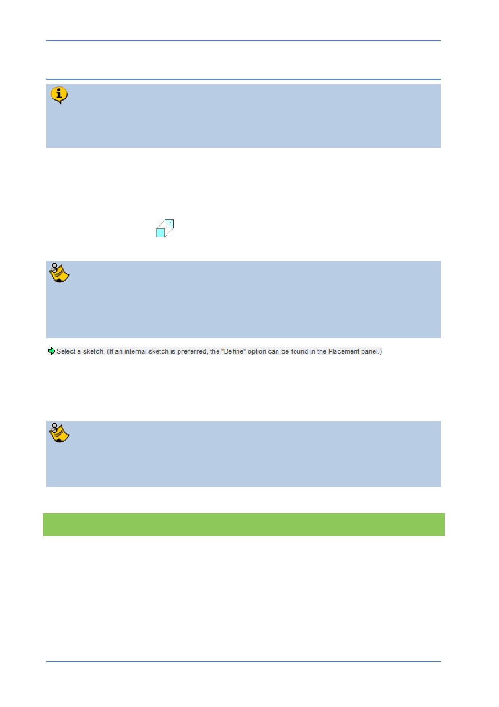

PTC Academic Program
Step 2: Start an Extrude
The easiest way to start creating solid geometry in Creo Parametric is to begin a
3D feature, in this case an extrude, then select the sketch plane. Extrude is just
one of the “sketch based” features in Creo Parametric.
You will start an Extrude then select datum plane FRONT as your sketching plane.
1. Starting an Extrude (sketched) feature and defining the sketch plane:
Start the Extrude
tool from the Shapes group of the Model tab.
While using Creo Parametric, keep an eye on the prompt line at the bottom of the
screen. There you will see messages telling you what Creo is doing, if there is a
problem or what you need to do next. In this case you are being guided to select
the sketch plane
In the model tree or the graphics area, select datum plane FRONT .
The Sketch tab will open and you will be able to start sketching. Two “Reference” lines
will be visible on the Front datum plane.
A sketch needs a minimum of two Reference lines to locate the geometry you
create. In this case, Creo Parametric has created these automatically based on
the other two datum planes.
What have you learned?
Starting an Extrude (sketched) feature.
Selecting a sketch plane.
The Ribbon interface workflow.
© 2012 PTC
Creo Parametric 2.0 Primer
Page 15